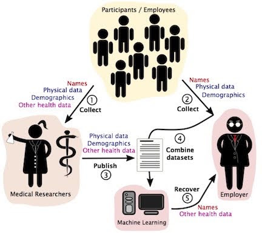
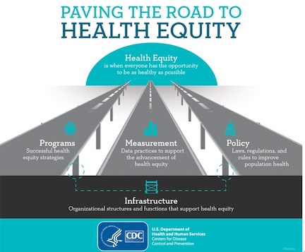

AI and big data are now part of sensitive-healthcare processes such as the initiation of end-of-life discussions. This raises novel data privacy and ethical concerns; the time is now to update or eliminate thoughts, designs, and processes which are most vulnerable.

Figure by Dan Utter and SITNBoston
Data Privacy and Ethical Concerns in the Digital Health Age
With the recent announcements of tech giants like Amazon and Google to merge or partner with healthcare organizations, legitimate concerns have arisen on what this may mean for data privacy and equity in the healthcare space.1,2 In July 2022, Amazon announced that it had entered into a merger agreement with One Medical: a primary care organization with over a hundred virtual and in-person care locations spread throughout the country. In addition, just this week, Google announced its third provider-partnership with Desert Oasis Healthcare: a primary and specialty provider network serving patients in multiple California counties. Desert Oasis Healthcare is all set to pilot Care Studio, an AI-based healthcare data aggregator and search tool which Google built in partnership with one of the largest private healthcare systems in the US, Ascension.2 Amazon, Google, and their care partners all profess the potential “game-changing” advances these partnerships will bring into the healthcare landscape, such as greater accessibility and efficiency. Industry pundits, however, are nervous about the risk to privacy and equity which will result from what they believe will be an unchecked mechanism of data-sharing and advanced technology use. In fact, several Senators, including Senator Amy Klobuchar (D-Minn.) have urged the Federal Trade Commission (FTC) to investigate Amazon’s $3.9 billion merger with One Medical.1 In a letter to the FTC, Klobuchar has expressed concerns over the “sensitive data it would allow the company to accumulate”.1
While Paul Muret, vice president and general manager of Care Studio at Google, stated that patient data shared with Google Health will only be used to provide services within Care Studio, Google does have a patient data-sharing past which it got in trouble for in 2019.2 The Amazon spokesperson on their matter was perhaps a bit more forthcoming when they stated that Amazon will not be sharing One Medical health information “without clear consent from the customer”.1 With AI and big data technologies moving so swiftly into the most vulnerable part of our lives, it’s most likely that nobody, not even the biggest technology vendor who may implement algorithms or use big-data, understands what this may mean for privacy and equity. However, it is important that we start to build the muscle memory needed to tackle the new demands on privacy protection and healthcare ethics which the merger of technologies, data and healthcare will bring into our lives. To this end, we will look at one healthcare organization which has already implemented big data and advanced machine learning algorithms (simply put, the equations which generate the “intelligence” in Artificial Intelligence) in the care of their patients. We will examine the appropriateness behind the collection and aggregation of data as well as the usage of advanced technologies in their implementation. Where possible, we will try to map their processes to respected privacy and ethics frameworks to identify pitfalls. Since the purpose of this study is to spot potentially harmful instantiations of design, thoughts or processes, the discourse will lean towards exploring areas ripe for optimizations versus analyzing safeguards which already do exist. This is important to remember as this case study is a way to arm ourselves with new insights versus a way to admonish one particular organization for innovating first. The hope is that we will spark conversations around the need to evolve existing laws and guidelines that will preserve privacy and ethics in the world of AI and big data.
Health Data Privacy at the Hospital
In 2020, Stanford Hospital in Palo Alto, CA launched a pilot program often referred to as the Advanced Care Planning (ACP) model.3 The technology behind the model is a Deep Learning algorithm trained on pediatric and adult patient data acquired between 1995 and 2014 from Stanford Hospital or Lucile Packard Children’s hospital. The purpose of the model is to improve the quality of end-of-life (also known as palliative) care by providing timely forecasters which can predict an individual’s death within a 3-12 month span from a given admission date. Starting with the launch of the pilot in 2020, the trained model automatically began to run on the data of all newly-admitted patients. To predict the mortality of a new admission, the model is fed twelve-months worth of the patient’s health data such as prescriptions, procedures, existing conditions, etc. As the original research paper on this technology states, the model has the potential to fill a care gap, since only half of “hospital admissions that need palliative care actually receive it”.4
However, the implementation of the model is rife with data privacy concerns. To understand this a little better we can lean on the privacy taxonomy framework provided by Daniel J. Solove, a well-regarded privacy & law expert. Solove provides a way to spot potential privacy violations by reviewing four categories of activities which can cause the said harm: collection of data, processing of data, dissemination of data and what Solove refers to as invasion.5 Solove states that the act of processing data for secondary use (in this case, using patient records to predict death versus providing care) violates privacy. He states, “secondary use generates fear and uncertainty over how one’s information will be used in the future, creating a sense of powerlessness and vulnerability”.5 In addition, he argues it creates a “dignitary harm as it involves using information in ways to which a person does not consent and might not find desirable”.5
A reasonable argument can be made here that palliative care is healthcare and therefore cannot be bucketed as a secondary use of one’s healthcare data. In addition, it can be argued that prognostic tools in palliative care already exist. However, this is exactly why discussions around privacy and specifically privacy and healthcare need a nuanced and detailed approach. Most if not all palliative predictors are used on patients who are already quite serious (often in the I.C.U). To illustrate why this is relevant, we can turn to the contextual integrity framework provided by Helen Nissenbaum, a professor and privacy expert at Cornell Tech. Nissenbaum argues that each sphere of an individual’s life comes with deeply entrenched expectations of information flows (or contextual norms).6 For example, an individual may be expecting and be okay with the informational norm of traffic cameras capturing their image, but the opposite would be true for a public bathroom. She goes on to state that abandoning contextual integrity norms is akin to denying individuals the right to control their data, and logically then equal to violating their privacy. Mapping Nissenbaum’s explanation to our example, we can see that running Stanford’s ACP algorithm on let’s say for example, a mostly healthy pregnant patient, breaks information norms and therefore qualifies as a contextual integrity/secondary use problem. An additional point of note here is the importance of consent and autonomy in both Solove and Nissenbaum’s arguments. Ideas such as consent and autonomy are prominent components, and sometimes even definitions of privacy and may even provide mechanisms to avoid privacy violations.
In order for the prediction algorithm to work, patient data such as demographic details regarding age, race, gender and clinical descriptors such as prescriptions, past procedures etc., are combined to calculate the probability of patient death. Thousands of attributes about the patient can be aggregated in order to determine the likelihood of death ( in the train data set an average of 74 attributes were present per patient).4 Once the ACP model is run on a patient’s record, physicians get the opportunity to initiate advance care planning with the patients most at risk for dying within a year. Although it may seem harmless to combine and use data where the patient has already consented to its collection, Solove warns that data aggregation can have the effect of revealing new information in a way which leads to privacy harm.5 One might argue that in the case of physicians, it is in fact their core responsibility to combine facts to reveal clinical truths. However, Solove argues, “aggregation’s power and scope are different in the Information Age”.5 Combining data in such a way breaks expectations, and exposes data that an individual could not have anticipated would be known and may not want to be known. Certainly when it comes to the subject of dying, some cultures even believe that the “disclosure may eliminate hope”.7 A thoughtful reflection of data and technology processes might help avoid such transgressions on autonomy.
Revisiting Ethical Concerns
For the Stanford model, the use of archived patient records for training the ACP algorithm was approved by what is known as an Institutional Review Board (IRB). The IRB is a committee responsible for the ethical research of human subjects and has the power to approve or reject studies in accordance with federal regulations. In addition, IRBs rely on the use of principles found in a set of guidelines called the Belmont Report to ensure that human subjects are treated ethically.
While the IRB most certainly reviewed the use of the training data, some of the most concerning facets of the Stanford process are on the flip side: that is, the patients on whom the model is used. The death prediction model is used on every admitted patient and without their prior consent. There are in fact strict rules that govern consent, privacy and use when it comes to healthcare data. The most prominent of these being the federal law known as The Health Insurance Portability and Accountability Act (HIPAA). HIPAA has many protections for consent, identifiable data and even standards such as minimum necessary use which prohibits exposure without a particular purpose. However, it also has exclusions for certain activities, such as research. It is most probable therefore that the Stanford process is well within the law. However, as other experts have pointed out, HIPAA “was enacted more than two decades ago, it did not account for the prominence of health apps, data held by non-HIPAA-covered entities, and other unique patient privacy issues that are now sparking concerns among providers and patients”.8 In addition, industry experts have “called on regulators to update HIPAA to reflect modern-day issues”.8 That being said, it might be a worthwhile exercise to assess how the process of running the ACP model on all admitted patients at Stanford hospital stacks up to the original ethical guidelines outlined in the Belmont Report. One detail to note is that the Belmont Report was created as a way to protect research subjects. However, as the creators of the model themselves have pointed out, the ACP process went live just after a validation study and before any double blind randomized controlled trials (the gold standard in medicine). Perhaps then, one can consider the Stanford process to be on the “research spectrum”.
One of the three criteria in the Belmont Report for the ethical treatment of human subjects is “respect for persons”: or the call for the treatment of individuals as autonomous agents.9 In the realm of research this means that individuals are provided an opportunity for voluntary and informed consent. Doing otherwise is to call to question the decisional authority of any individual. In the ACP implementation at Stanford, there is a direct threat to self-governance as there is neither information nor consent. Instead an erroneous blanket assumption is made about patients’ needs around advance care planning and then served up as a proxy for consent. This flawed thinking is illustrated in a palliative care guideline which states that “many ethnic groups prefer not to be directly informed of a life-threatening diagnosis”.7

Figure by U.S. Department of Health and Human Services Centers for Disease Control and Prevention
Furthermore, in the Belmont Report, the ethic of “justice” requires equal distribution of benefits and burden to all research subjects.9 The principle calls on the “the researcher [to verify] that the potential subject pool is appropriate for the research”.10 Another worry with the implementation of the ACP model is that it was trained on data from a very specific patient population. The concern here is what kind of variances the model may not be prepared for and what kind of harm that can cause.
Looking Forward
Experts agree that the rapid growth of AI technologies along with private company ownership and implementation of AI tools will mean greater access to patient information. These facts alone will continue to raise ethical questions and data privacy concerns. As the AI clouds loom over the healthcare landscape, we must stop and reassess whether current designs, processes and even standards still protect the core tenets of privacy and equity. As Harvard Law Professor Glen Cohen puts it, when it comes to the use of AI in clinical decision-making, “even doctors are operating under the assumption that you do not disclose, and that’s not really something that has been defended or really thought about”.11 We must prioritize the protection of privacy fundamentals such as consent, autonomy and dignity while retaining ethical integrity such as the equitable distribution of benefit and harm. As far as ethics and equity are concerned, Cohen goes on to state the importance of them being part of the design process as opposed to “being given an algorithm that's already designed, ready to be implemented and say, okay, so should we do it, guys”?12